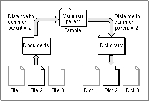

Legacy Document
Important: The information in this document is obsolete and should not be used for new development.
Important: The information in this document is obsolete and should not be used for new development.


Search Strategies
Some of the key features of the Alias Manager are the search strategies built into the alias-resolution functions. The search strategies are designed to find the original target
of an alias record, even if the target has been moved, renamed, copied, or restored from backup. Which strategy you use to resolve a particular alias record usually depends on a number of factors, including whether you are willing to sacrifice time to find as many potential targets as possible and whether the target is known to be in a particular volume. This section describes the available search strategies.You can request either a relative or an absolute search. If you request an absolute search, you can specify whether the search should be either fast or exhaustive. (A relative search is always a fast search.) As you can see, there are three general search strategies available to your application for resolving alias records:
The following sections describe these search strategies.
- relative search (always fast)
- absolute fast search
- absolute exhaustive search
Relative Searches
During a relative search, the Alias Manager starts in a specified directory and
searches for the target of an alias record by ascending the file system hierarchy to
a predetermined common parent of the target and the starting directory and then descending the hierarchy from that common parent.Suppose, for example, that you are writing a word-processing application that allows the user to build a customized, supplemental dictionary for each document. You might create the dictionary as a separate document in the same directory as the document it serves. In this case, the common parent of the document and the dictionary file (that is, the lowest-level directory that appears in the pathnames of both) is simply the directory containing both files.
More generally, you might want to store all document-specific dictionary files in their own directory, as illustrated in Figure 4-1. Here, the common parent of the document file "File 2" and its associated dictionary file "Dict 2" is the directory named "Sample."
Figure 4-1 Resolving a relative path

To resolve an alias record using a relative search, the Alias Manager needs several pieces of information, which are recorded in the alias record at the time you create it. The Alias Manager needs a relative path, that is, a path to the target from another file or directory on the same volume. (Relative paths don't work across volumes.) To record a relative path, the Alias Manager saves the distances from the target and the starting file or directory to their common parent. The Alias Manager can later use those distances in conjunction with the full pathname to conduct a relative search.
When resolving the alias record by using a relative path, the Alias Manager looks at the directory at the specified distance above the starting file or directory. The Alias Manager then constructs a partial pathname by extracting one field of the absolute pathname for each step from the target to the common parent. In Figure 4-1, the distance is 2, so the partial pathname is "Dictionary:Dict 2".
Absolute Searches
In contrast to a relative search, an absolute search always begins at the root directory
of the file system hierarchy and always descends the hierarchy. The first step in any absolute search is to identify the volume on which the target resides. When conducting a volume search, the Alias Manager considers the volume's name, its creation date (which acts almost as a unique identifier for a volume), and its type (for example, a hard disk, a 3.5-inch floppy disk, or an AppleShare volume).The Alias Manager first looks for a volume that matches all three criteria: name, creation date, and type. The search succeeds if the volume is mounted and if its name and creation date have not changed since the record was created. If the search fails, the Alias Manager attempts to match by creation date and type only. This step locates volumes that have been renamed. Finally, the Alias Manager attempts to match by volume name and type only.
If the target is on an unmounted AppleShare volume, the Alias Manager attempts to mount the volume. It presents a name and password dialog box if appropriate. If the target is on an unmounted ejectable volume, the Alias Manager displays a dialog box prompting the user to insert the volume. Your application can suppress the automatic mounting, as explained in the description of the
MatchAliasfunction on page 4-20.
In some circumstances, a relative search identifies the correct target when an absolute search cannot. For example, suppose the user of your word-processing application creates a working copy of a document and dictionary by copying the entire folder
- Note
- Any time that your application needs to resolve a large number of aliases and the resolution of each alias might require user interaction, you should ensure that if the user cancels any of the dialog boxes, all remaining user interaction is canceled as well.

Sampleto another disk. The user later updates the original document and dictionary
by copying the folder from the working disk. All of the underlying file and directory identifications change, but the filenames and relative path remain the same. When the user later runs the spelling checker on the document, a relative-path search finds the correct target dictionary.Fast Searches
A fast search employs an algorithm designed to find the target of an alias record quickly. Depending on how you invoke it, the fast-search algorithm starts with either a relative search or an absolute search. The Alias Manager can perform a relative fast search whether or not it has identified the target volume, but it cannot perform an absolute fast search unless the volume has been identified.During an absolute fast search, the Alias Manager first searches by file ID (if the target
is a file) or directory ID (if the target is a directory). (File IDs and directory IDs are described in the chapter "File Manager" in this book.) Even if a file has been renamed
or moved on a volume, the Alias Manager can find it quickly through its file ID.If the search by file ID or directory ID fails, the Alias Manager searches by name in the original parent directory. This search locates the target if its file or directory ID has changed but it still exists by the same name in the parent directory (for example, if the target was restored from a backup). The Alias Manager compares file numbers of files found by name in the correct parent directory. If the file numbers do not match, the file is treated as a possible match--that is, it is put on the list of candidates--and the search continues. If the target is not found by name in the parent directory, the Alias Manager looks for a file by file number in the parent directory. A file with the same file number but a different name replaces a file with the same name but a different file number in the list of matches.
If the search by file ID or directory ID fails and if the Alias Manager cannot find the original parent directory, it searches for the target by full pathname. This search succeeds if the target resides in the same location on the volume but the directory ID of its parent directory has changed (for example, if the entire parent directory was restored from
a backup).If the search by full pathname fails, the Alias Manager attempts to find the file by tracing partial pathnames up through all parent directories, using parent directory IDs instead of directory names. For example, consider this full pathname:
MyDisk:Fruits:Tropical:AckeesIf the search by full pathname fails, Alias Manager first looks for the partial pathname ":Ackees" in the directory with the ID that the directory "MyDisk:Fruits:Tropical" had when the alias record was created. If that search fails, it looks for ":Tropical:Ackees" in the directory with the ID that "MyDisk:Fruits" had, and so on.If you do not ask for a search by relative path first but do provide a starting point for a relative search, and if the alias record contains relative path information, the Alias Manager performs a relative search after the absolute search. The relative search succeeds if the relative path is the same as when the record was created and if the names of the target and its intervening parent directories have not changed.
Exhaustive Searches
An exhaustive search uses an algorithm that scans an entire volume to look for possible matches. The Alias Manager typically performs an exhaustive search by calling the File Manager functionPBCatSearch, searching for files or directories with a matching creation date, creator, and type. (See the chapter "File Manager" in this book for a description ofPBCatSearch.)The
PBCatSearchfunction is available only on volumes that support the HFS routines and only on systems running system software version 7.0 and later. WhenPBCatSearchis not available, an exhaustive search of the entire volume is performed by making a series of indexed File Manager calls, searching for objects with matching creation date, type, creator, or file number.